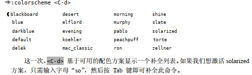

Vim命令行模式
Command-Line Mode
命令行模式
Vim 的先祖是 vi，正是 vi 开创了区分模式编辑的范例。而 vi 则奉一个名为 ex的行编辑器为先祖，这就是为什么称在命令行模式输入为Ex命令。
Tip 27 Meet Command-Line Mode
结识命令行模式
命令行模式会提示我们输入
- 一条
Ex命令 - 一个查找模式
- 一个表达式。
按下 ：键进入命令行模式，输入一条命令按< CR >执行它。
常用Ex命令: 读写文件 :edit 和 :write，创建新标签页:tabnew及分割窗口 :split， 或是操作参数列表:prev/:next及缓冲区列表 :bprev/:bnext。事实上， Vim 为几乎所有功能都提供了相应的 Ex 命令。
操作缓冲区文本的 Ex 命令
| Command | Effect |
|---|---|
| :[range]delete [x] | 行区间删除 [内容存入寄存器 x] |
| :[range]yank [x] | 行区间拷贝 [内容存入寄存器 x] |
| :[line]put [x] | 指定行追加寄存器 x 的内容 |
| :[range]copy {address} | 行区间拷贝后并张贴到指定的位置 |
| :[range]move {address} | 行区间移动到指定的位置 |
| :[range]join | 合并行，连接指定范围内的行 |
| :[range]normal {commands} | 区间内执行常规模式的命令 |
| :[range]substitute/{pattern}/{string}/[flags] | 区间内按匹配的替换 |
| :[range]global/{pattern}/[cmd] | 区间内匹配的行里执行 Ex 命令: cmd |
在命令行模式中，文本出现在命令行上。命令行模式中也可以用组合键触发命令。
有些命令在插入模式和命令行模式中通用。例如，可以用<C-w>和 <C-u>分别删除至上个单词的开头及行首，也可以用 <C-v> 或<C-k>来插入键盘上找不到的字符，还可以用 <C-r>{register} 命令把任意寄存器的内容插入到命令行。
Tip 28 Execute a Command on One or More Consececutive Lines
在一行或多行上执行Ex命令
很多Ex命令可以用 [range] 指定要操作的范围。我们可以用行号、位置标记或是查找模式来指定范围的开始位置及结束位置。
Ex 命令的优点之一是它们可以在某一范围内的所有行上执行。
通常，一个范围具有如下的形式：
1 | ：{ start } , { end } |
定义范围的语法非常灵活，既可以混合搭配行号、位置标记以及查找模式，也可以对它们加以偏移。
偏移地址的一半形式如下：
1 | ：{ address } + n |
如果n被省略，那么缺省的偏移量为1。例如：
| .p | p : print ( 打印简写 ) ，打印当前行 |
|---|---|
| .+p | 打印当前行的下一行 |
特殊符号
| 符号 | 地址 |
|---|---|
| 1 | 文件第一行 |
| $ | 文件最后一行 |
| 0 | 虚拟行，文件第0行，位于第一行上方 |
| . | 文件当前行 |
| ‘m | 包含位置标记m的行 |
| ‘< | 高亮选区的起始行 |
| ‘> | 高亮选区的结束行 |
| % | 当前文件中的所有行，相当于 : 1 , $ |
Tip 29 Duplicate or Move Lines Using ‘:t’ and ‘:m’ Commands
使用 :t 和 :m 命令来复制或移动行
:copy 命令（及其简写形式 :co 以及 :t）让我们可以把一行或多行从文档的一部分复制到另一部分。
而:move（简写形式 :m）命令则可以让我们把文档移动到其他地方。
为了更好地记忆，可以把：t命令想成“复制到 copy TO。
下表展示了:t 命令的一些应用实例：
| 命令 | 用途 |
|---|---|
| :6t. | 把第6行复制到当前行下方 |
| :t6 | 把当前行复制到第6行下方 |
| :t. | 为当前行创建一个副本，类似于普通模式下 yyp |
| :t$ | 把当前行复制到文件末尾 |
| :’<,’>t0 | 把高亮选中的行复制到文件开头 |
:t. 与 yyp 的区别：yyp会使用寄存器，而 :t. 不会
在复制距离较远的行时，:t命令通常更加高效。
:move 命令看上去和:copy 命令很相似，只是他是移动文本。
重复上次的 Ex 命令非常简单，只需按 @: 即可
Tip 30 Run Normal Mode Command Across a Range
在指定范围上执行普通模式命令
如果想在一系列连续行上执行一条普通模式命令，我们可以用 :normal 命令。此命令在与 . 命令或宏结合使用时，我们只需花费很少的努力就能完成大量重复性任务。
语法如下:
1 | :[range]normal {commands} |
Tip 31 Repeat the Last Ex Command
重复上一次Ex命令
.命令可重复上次的修改。但是，.命令不会重复由 Vim 命令行中做出的修改。
作为替代， 我们可以用 @: 来重复上次的 Ex 命令
Tip 32 Tab-Complete Your Ex Commands
Tab 自动补全Ex命令
如同在 shell 中一样，在命令行上也可以用<Tab>键自动补全命令。
Vim 在选取Tab 补全的补全项时非常智能，它会检查命令行上已经输入的上下文，然后再构建合适的补全列表。例如，可以这样输入：

<C-d> 命令会让 Vim 显示可用的补全列表，我们多次按<Tab>键的话，命令行上会依次显示 colder、 colorscheme，然后再回到最初的 col，如此循环往复。要想反向遍历补全列表，可以按 <S-Tab>。
假设我们想改配色方案，但是不太记得要用的配色方案的名称，这时可以用<C-d> 命令列出所有的可用选项。
不过在neovim中貌似以及封装好了
Tip 33 Insert the Current Word at the Command Prompt
将当前单词插入命令行
即使是在命令行模式下， Vim 也始终知道光标位于何处以及哪个分割窗口处于活动状态。为节省时间，我们可以把活动窗口中的当前单词（或字串）插入到命令行中。
在 Vim 的命令行下， <C-r><C-w> (word)映射项会复制光标下的单词并把它插入到命令行中。我们可以利用这一功能减少击键的次数。
而<C-r><C-a>(WORD)把当前字串插入到命令行
Tip 34 Recall Commands from history
回溯历史命令
我们先按:键切换到命令行模式，在保持提示符为空的情况下按<Up>键，此时最后执行的那条Ex命令就会被填充到命令行上。再接着按 <Up> 键的话，就可以回到更早的 Ex 历史命令；按 <Down> 键的话，则会沿相反方向滚动。上下方向键也是可以。
结识命令行窗口
在命令行模式下按 <Ctrl-f> 从命令行模式切换到命令行窗口。
Vim 会打开一个新的窗口，当命令行窗口处于打开状态时，它会始终拥有焦点。这意味着，除非关闭命令行窗口，否则我们无法切换到其他窗口。要想关闭命令行窗口，我们可以执行 :q 命令（就像关闭普通 Vim 窗口那样），或是按 <CR>。
下表总结了打开命令行窗口的几种方式
| 命令 | 动作 |
|---|---|
| q/ | 打开查找命令历史的命令行窗口（注意是查找命令） |
| q: | 打开Ex命令历史的命令行窗口 |
| < C - f > | 从命令行模式切换到命令行窗口 |
q: 命令和 :q 命令很容易被搞混。
Tip 35 Run Command in the shell
运行shell命令
在 Vim 的命令行模式中，给命令加一个叹号! 前缀就可以调用外部程序。
注意区分:!ls和:ls的不同之处。前者调用的是 shell 中的 ls 命令，而 :ls调用的是 Vim 的内置命令，用来显示缓冲区列表的内容。
:!{cmd}这种语法适用于执行一次性命令，而:shell命令会启动一个交互的 shell 会话，可在 shell 中执行数条命令，用 exit 命令可以退出此 shell 并返回 Vim界面。
Vim挂起，即Vim 后台执行: 此方式比 :shell 方式要方便一点。<C-z> 会把 vim 挂起, 然后切换到终端。
在 Vim 中操作时，我们能很方便地调用 shell 命令 。
:shell启动一个 shell (输入 exit 返回 Vim):!{cmd}在 shell 中执行 {cmd}
使用缓冲区的内容进行标准输入或输出:
:read !{cmd}- 把 cmd 执行的结果(标准输出)写入当前文件(缓冲区) 如: :read !ls:write !{cmd}- 和上面相反, 把当前文件(缓冲区)内容当做标准输入传给了 cmd 命令
! 符号的位置不同有不同的含义:
:[range]write ! sh- 把缓冲区当做标准输入传给了 sh 命令:[range]write! filename- 表示把 filename 内容强制覆盖掉; 相当于内容另存为一个文件